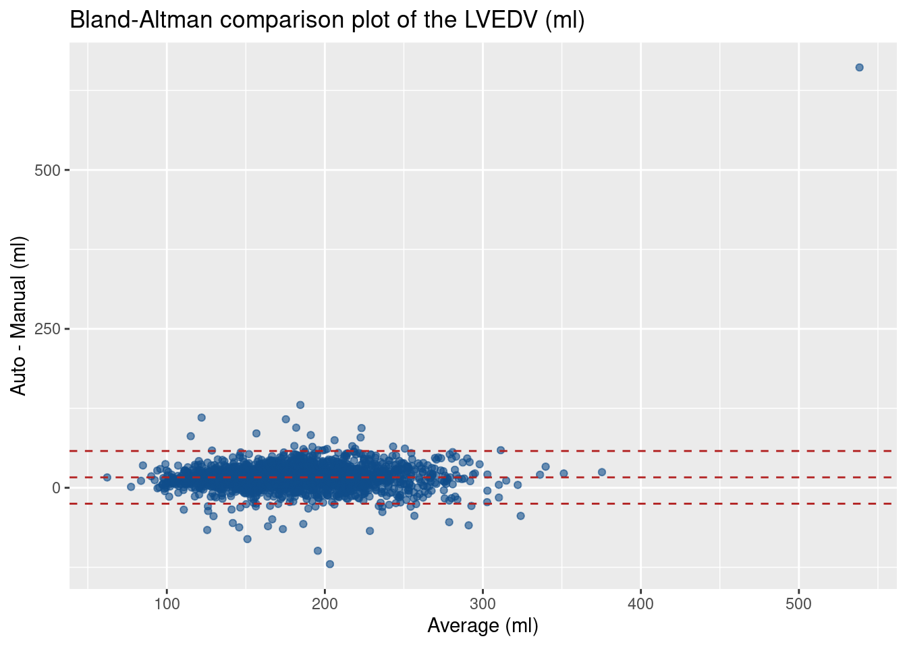
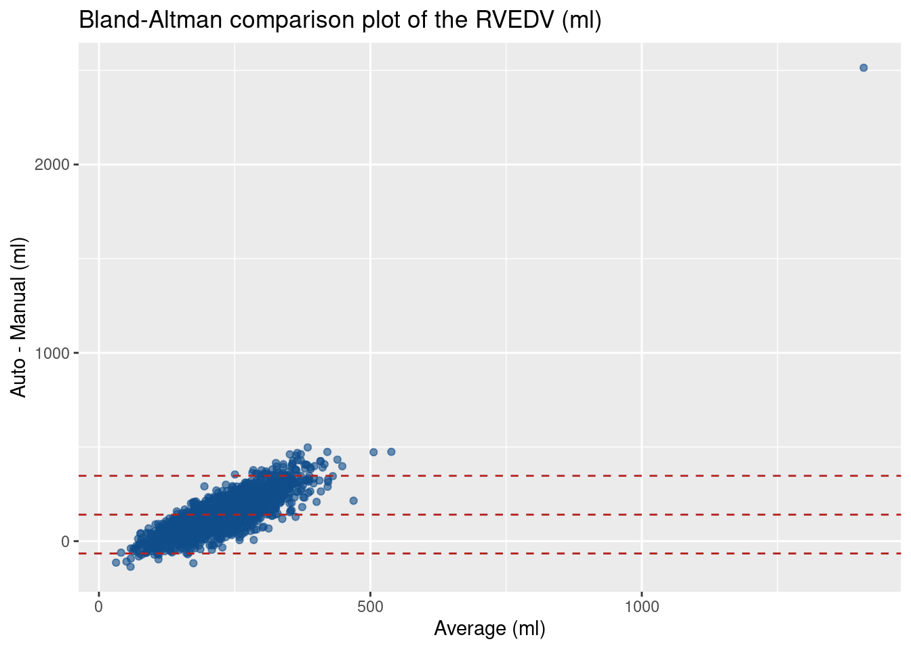

library(tidyverse)
library(ggplot2)
library(knitr)4 Bland-Altman analysis
The seminal paper written by Douglas G. Altman and J. Martin Bland on Lancet in 1986 (Bland and Altman 1986) has been the most cited paper ever. The method compares values measured by two different observers, devices, or algorithm. If the two measurements are comparable, then we expect that
- the bias or mean of differences will be around zero,
- the differences are within the limits of agreement (usually ± 2 standard deviation), and
- there is no systematic differences or a trend line as the size of the object is getting bigger or smaller.
Let’s create a Bland-Altman plot.
4.1 Loading the data
This example uses datasets from a study that segmented human heart from cardiac MR images. Two measurements were performed: by an automatic segmentation method and by manual segmentation. We’re going to use only the left ventricle volume at end-diastole (LVEDV) and the right ventricle volume at end-diastole (RVEDV).
4.1.1 Automated segmentation
dt_auto <- read_csv('sample_data/auto_heart.csv', show_col_types = FALSE,
col_types = cols(
name = col_character(),
Frame = col_character(),
lv_vol = col_double(),
rv_vol = col_double()
)) %>%
# the ED frame for automated segmentation is at Frame == '000'
filter(Frame == '000') %>%
# select only the necessary columns
select(name, lv_vol, rv_vol) %>%
# fix the name to match with patient ID's from the manual data
mutate(
name = str_replace(str_replace(name, 'HCMR_', ''), '_', '-'),
) %>%
rename(LVEDV = lv_vol, RVEDV = rv_vol, patientID = name)
glimpse(dt_auto)Rows: 2,561
Columns: 3
$ patientID <chr> "001-0001", "001-0002", "001-0003", "001-0004", "001-0005", …
$ LVEDV <dbl> 253.2800, 204.6309, 226.3057, 176.5268, 192.3013, 176.6057, …
$ RVEDV <dbl> 525.5834, 335.4120, 370.6469, 239.0387, 300.2459, 409.7711, …We have 2561 rows of patientID, LVEDV, and RVEDV for the automated segmentation method.
4.1.2 Manual segmentation
dt_man <- read_csv('sample_data/corelab_heart.csv', show_col_types = FALSE,
col_types = cols(
sitePatID = col_character(),
lvedv = col_double(),
rvedv = col_double()
)) %>%
select(sitePatID, lvedv, rvedv) %>%
rename(LVEDV = lvedv, RVEDV = rvedv, patientID = sitePatID)
glimpse(dt_man)Rows: 2,752
Columns: 3
$ patientID <chr> "001-0001", "001-0002", "001-0003", "001-0004", "001-0005", …
$ LVEDV <dbl> 253.39, 171.29, 210.51, 184.92, 190.18, 166.26, 229.61, 246.…
$ RVEDV <dbl> 214.25, 161.98, 156.02, 137.83, 174.10, 147.49, 181.40, 202.…We have 2752 rows of patientID, LVEDV, and RVEDV from the manual segmentation method.
4.1.3 Join the tables
We need to join the two tables using inner_join. See more: join operations.
dt_joined <- inner_join(dt_auto, dt_man,
by = c("patientID" = "patientID"),
suffix = c("_auto", "_man"))
glimpse(dt_joined)Rows: 2,540
Columns: 5
$ patientID <chr> "001-0001", "001-0002", "001-0003", "001-0004", "001-0005",…
$ LVEDV_auto <dbl> 253.2800, 204.6309, 226.3057, 176.5268, 192.3013, 176.6057,…
$ RVEDV_auto <dbl> 525.5834, 335.4120, 370.6469, 239.0387, 300.2459, 409.7711,…
$ LVEDV_man <dbl> 253.39, 171.29, 210.51, 184.92, 190.18, 166.26, 229.61, 246…
$ RVEDV_man <dbl> 214.25, 161.98, 156.02, 137.83, 174.10, 147.49, 181.40, 202…We have now 2540 rows of patientID, LVEDV_auto, LVEDV_man, RVEDV_auto, and RVEDV_man.
A sanity check: we can check if there are duplicate patientID’s in the table by checking if the number of unique patient ID the same with the number of rows
nrow(dt_joined) == nrow(distinct(dt_joined, patientID))[1] TRUE4.2 Calculate differences and averages
Bland-Altman analysis plots points, where
x-axis is the average between the two methods, and
y-axis is the differences between the two methods
Thus, we need to calculate the differences and the averages between the automated and segmentation methods for both LVEDV and RVEDV values.
dt_ba <- dt_joined %>%
mutate(
# differences between automated and manual segmentations
LVEDV_diff = LVEDV_auto - LVEDV_man,
RVEDV_diff = RVEDV_auto - RVEDV_man,
# average between automated and manual segmentations
LVEDV_avg = 0.5 * (LVEDV_auto + LVEDV_man),
RVEDV_avg = 0.5 * (RVEDV_auto + RVEDV_man)
)which will give you a table like this:
knitr::kable(head(dt_ba, n=5))| patientID | LVEDV_auto | RVEDV_auto | LVEDV_man | RVEDV_man | LVEDV_diff | RVEDV_diff | LVEDV_avg | RVEDV_avg |
|---|---|---|---|---|---|---|---|---|
| 001-0001 | 253.2800 | 525.5834 | 253.39 | 214.25 | -0.1099607 | 311.3334 | 253.3350 | 369.9167 |
| 001-0002 | 204.6309 | 335.4120 | 171.29 | 161.98 | 33.3409099 | 173.4320 | 187.9605 | 248.6960 |
| 001-0003 | 226.3057 | 370.6469 | 210.51 | 156.02 | 15.7956930 | 214.6269 | 218.4078 | 263.3334 |
| 001-0004 | 176.5268 | 239.0387 | 184.92 | 137.83 | -8.3932075 | 101.2087 | 180.7234 | 188.4343 |
| 001-0005 | 192.3013 | 300.2459 | 190.18 | 174.10 | 2.1212527 | 126.1459 | 191.2406 | 237.1729 |
4.3 LVEDV
We can calculate the bias and the limits of agreement: ±1.96 standard deviation:
(LVEDV_stats <-
mean(dt_ba$LVEDV_diff, na.rm=TRUE) +
c(-1.96, 0, 1.96) * sd(dt_ba$LVEDV_diff, na.rm=TRUE))[1] -25.01554 16.42433 57.86419This means that for LVEDV:
- The bias is 16.424326 ml, and
- The limit of agreements is between [-25.0155425, 57.8641945] ml.
Create the plot
dt_ba %>%
# drop missing values to avoid warning from ggplot2
drop_na(LVEDV_avg, LVEDV_diff) %>%
# plot LVEDV_diff vs LVEDV_avg
ggplot(aes(x=LVEDV_avg, y=LVEDV_diff)) +
geom_point(col="dodgerblue4", alpha=0.6) +
ylab("Auto - Manual (ml)") +
xlab("Average (ml)") +
ggtitle("Bland-Altman comparison plot of the LVEDV (ml)") +
geom_hline(yintercept = LVEDV_stats, col="firebrick", lty=2)
One particular case needs to be checked for a gross error in the automated segmentation.
4.4 RVEDV
We can calculate the bias and the limits of agreement: ±1.96 standard deviation:
(RVEDV_stats <-
mean(dt_ba$RVEDV_diff, na.rm=TRUE) +
c(-1.96, 0, 1.96) * sd(dt_ba$RVEDV_diff, na.rm=TRUE))[1] -65.41394 140.74064 346.89523This means that for LVEDV:
- The bias is 140.7406444 ml, and
- The limit of agreements is between [-65.4139384, 346.8952272] ml.
Create the plot
dt_ba %>%
# drop missing values to avoid warning from ggplot2
drop_na(RVEDV_avg, RVEDV_diff) %>%
# plot RVEDV_diff vs RVEDV_avg
ggplot(aes(x=RVEDV_avg, y=RVEDV_diff)) +
geom_point(col="dodgerblue4", alpha=0.6) +
ylab("Auto - Manual (ml)") +
xlab("Average (ml)") +
ggtitle("Bland-Altman comparison plot of the RVEDV (ml)") +
geom_hline(yintercept = RVEDV_stats, col="firebrick", lty=2)
There is clearly a systematic bias here with a strong trend line towards large bias when the size of the heart is increasing.